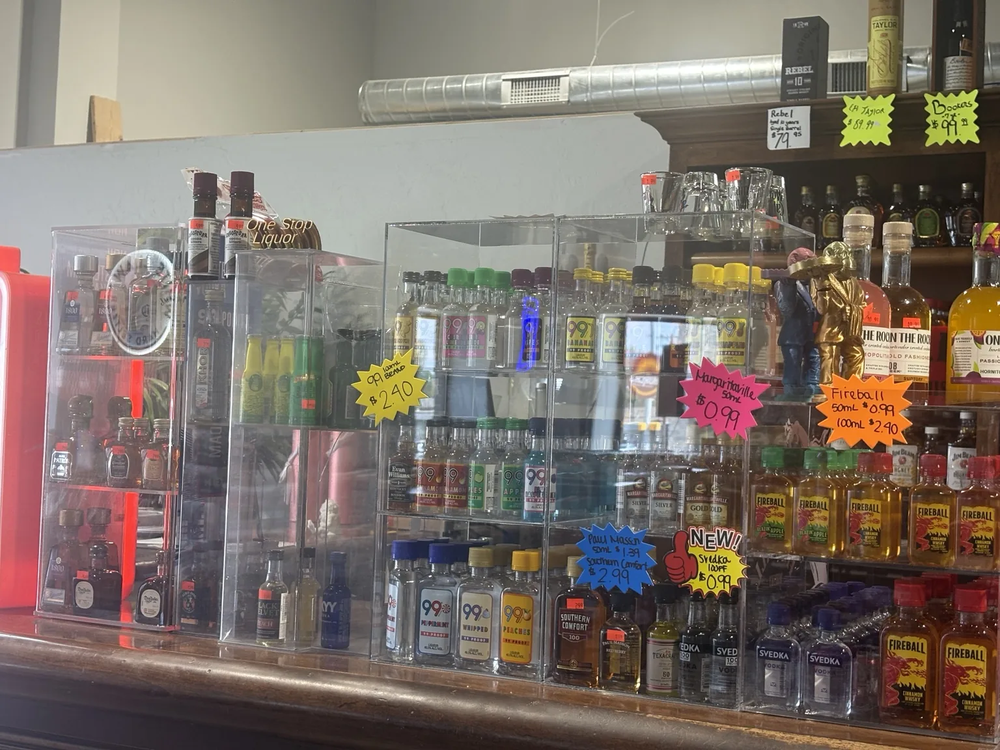
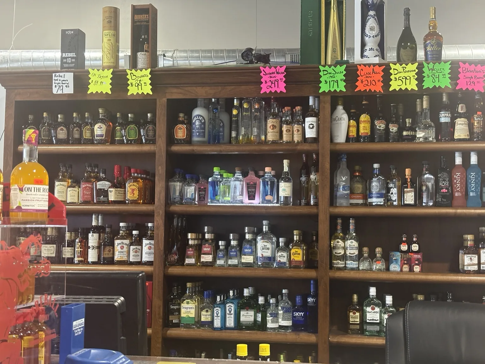
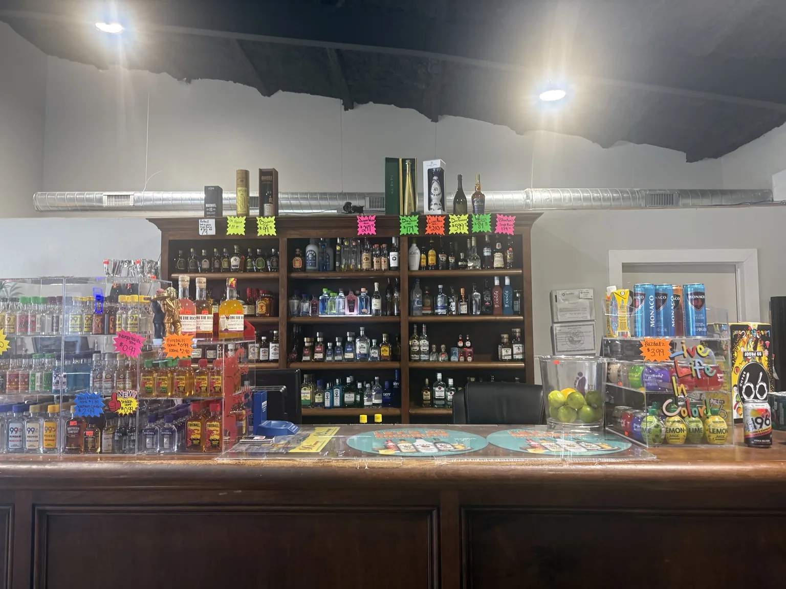

Wine, spirits
& beer in Bethany.
From bourbon and tequila to wine and beer, take a closer look at the shelves at One Stop Liquor in Bethany.

The next bottle
starts here.
Whether you have a favorite in mind or want to browse, explore the bottles below and stop in to see the full selection.
Latest shelf photos:
Wine & sparkling
Browse the wine racks and boxed wines.

Reds & sparkling bottles

A closer look at the wine racks

Boxed wine & canned drinks
Bourbon & whiskey
Take a closer look at the bourbon and American whiskey shelves.

Maker’s Mark & American whiskey

Bourbon & whiskey favorites

Jack Daniel’s & Jim Beam

Bourbon meets rum

Bourbon & spiced rum
Tequila & mezcal
Explore blanco, reposado and añejo tequilas alongside mezcal.
Patrón, Don Julio & more

Explore the tequila shelves

Tequila & mezcal
Vodka & brandy
Classic and flavored vodkas, with brandy on the neighboring shelves.

Brandy & classic vodka

Classic vodka favorites

Vodka in a range of styles

Tito’s & flavored vodkas

More for the cocktail shelf
Scotch, cognac & gin
Single malts, blended Scotch, Irish whiskey, cognac and gin.

Scotch & cognac

Cognac, Irish whiskey & gin
Rum, liqueurs & mixers
Browse rum, cream liqueurs and ingredients for mixed drinks.

Rum & cocktail mixers

Rum & cream liqueurs

Flavored rum & cordials
Beer & canned drinks
Browse packs, cans and bottled drinks when you stop in.

Find your usual.
Take a look through the beer packs and canned drinks when you stop by.
Mixers & around the counter
Mini bottles, cocktail ingredients and more to explore.

The finishing touches.
Browse mixers and the displays around the counter to round out your stop.

Small bottles. Plenty of choice.
Find miniature spirits, flavored shots and bottled cocktails around the checkout counter.

Take one more look.
Browse the bottles behind the counter and ask about anything that catches your eye.

Ready to pour.
Browse canned cocktails, hard seltzers and citrus mixers at the counter.

Before you head out.
Take a look through the mini bottles, spirits and drink displays around the checkout.
Photos show products and prices at the time they were taken. Selection, availability and pricing can change. Call (405) 470-8282 to ask about a specific bottle.